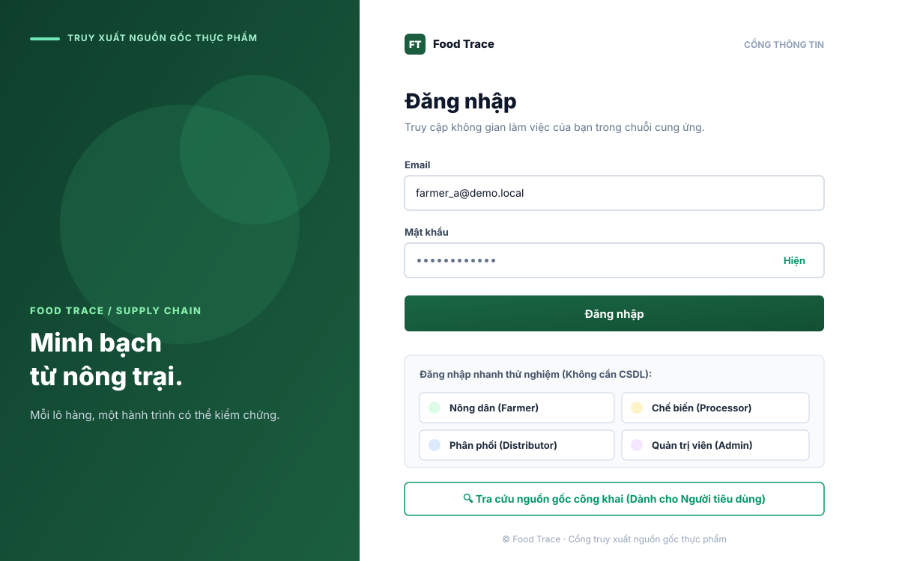
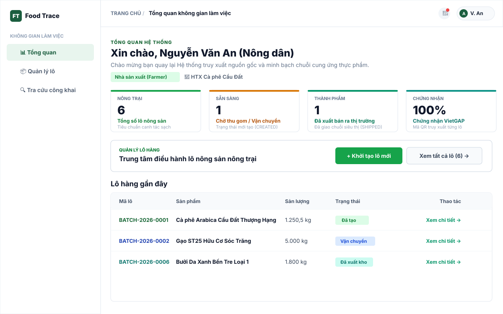
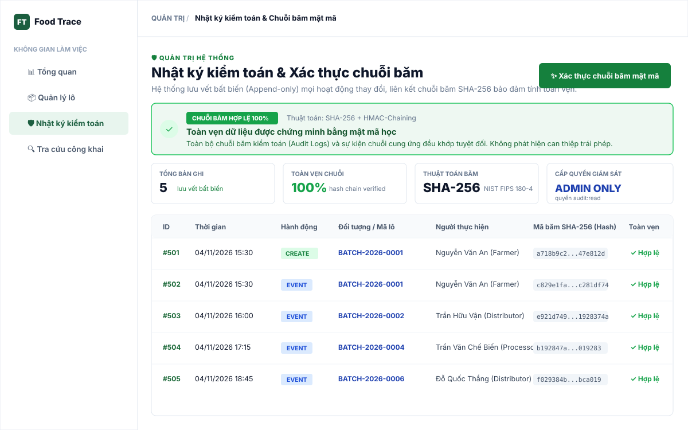
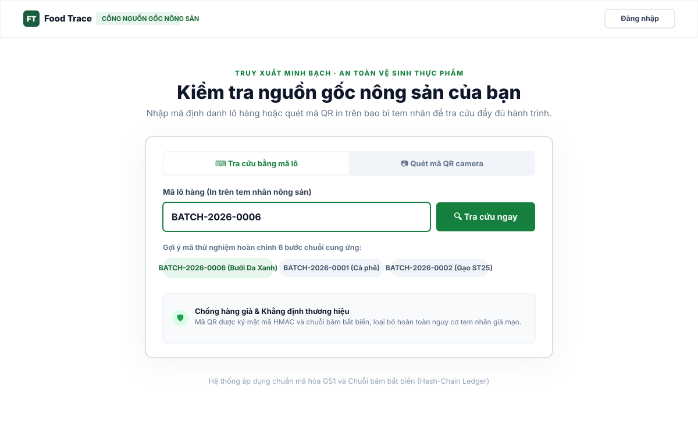
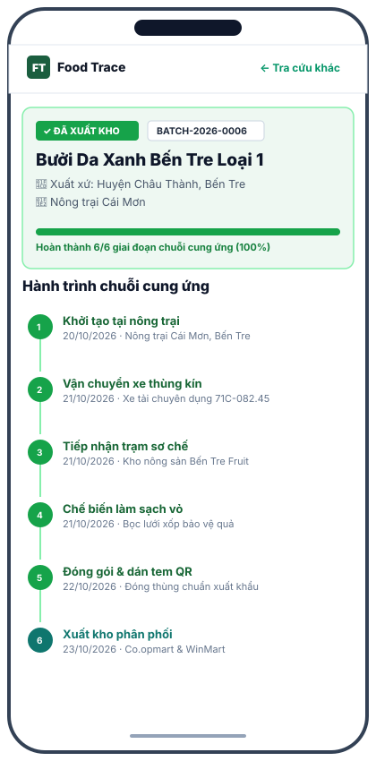
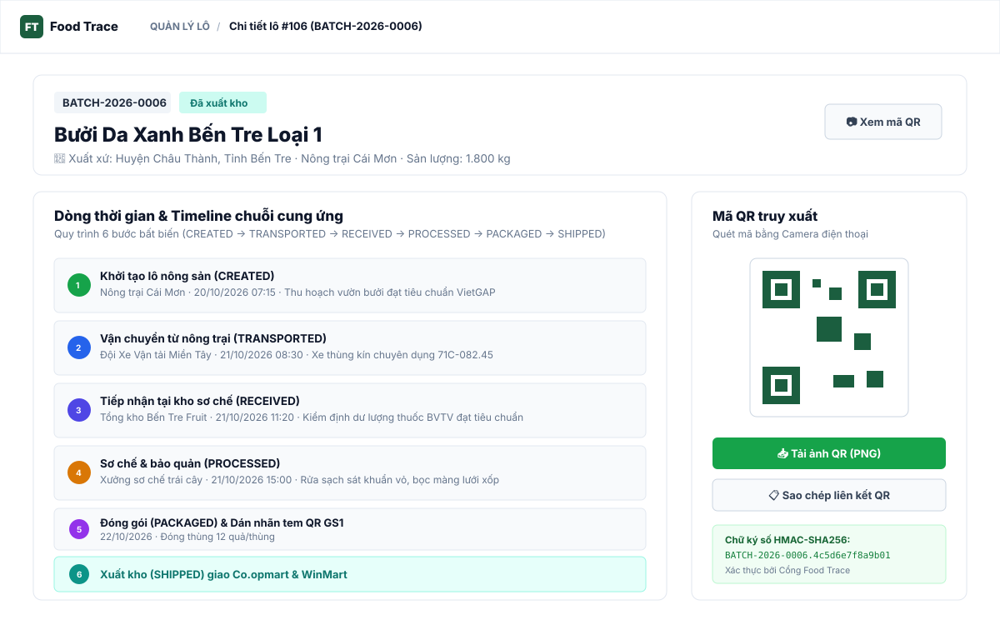
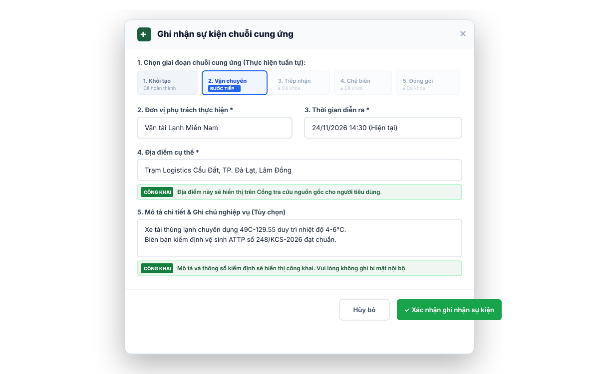
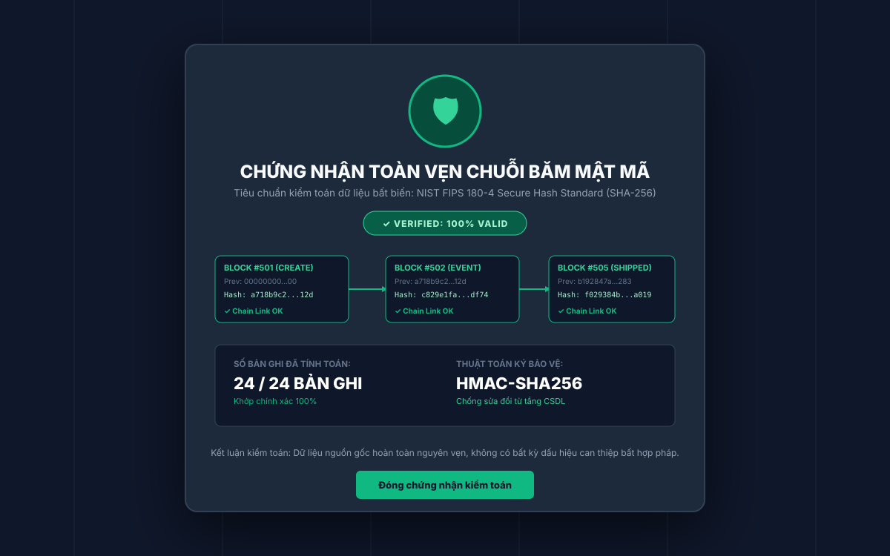

Hệ thống truy xuất nguồn gốc thực phẩm và minh bạch chuỗi cung ứng nông sản Việt Nam. Bàn giao giao diện hoàn thiện, responsive đa thiết bị, thông báo lỗi và xác thực chuỗi băm mật mã.

Bố trí form đăng nhập hiện đại với banner thương hiệu nông sản, tính năng xem/ẩn mật khẩu và 4 nút đăng nhập nhanh đại diện cho Farmer, Processor, Distributor, Admin (hỗ trợ thử nghiệm ngay không cần kết nối CSDL).

Bảng điều khiển dành riêng cho nông dân với 4 thẻ KPI nông trại (tổng lô, chờ vận chuyển, hoàn tất xuất bán, chứng nhận VietGAP), nút thao tác nhanh tạo lô mới và bảng danh sách lô nông sản gần đây.

Màn hình giám sát hệ thống dành cho Admin với danh sách Audit Log lưu vết mọi hành động CREATE, EVENT, UPDATE, liên kết chuỗi băm SHA-256 bảo đảm tính toàn vẹn và chống chối bỏ.

Giao diện dành cho Người tiêu dùng không cần đăng nhập. Hỗ trợ tra cứu bằng bàn phím mã lô hoặc quét mã QR qua webcam/camera điện thoại, tải ảnh QR và các chip gợi ý mã mẫu thử nghiệm.

Hiển thị kết quả tra cứu trên smartphone với huy hiệu xuất xứ, thanh tiến trình chuỗi cung ứng 100% (6/6 giai đoạn) và dòng thời gian dọc thân thiện, lọc sạch mọi trường nội bộ bảo mật của doanh nghiệp.

Giao diện nội bộ theo dõi lô hàng đã hoàn thành 6 bước (CREATED → SHIPPED) kèm thẻ mã QR bên phải cho phép in, sao chép liên kết hoặc tải ảnh PNG độ phân giải cao phục vụ in tem bao bì.

Form ghi nhận sự kiện tuần tự, khóa các bước sai thứ tự để ngăn ngừa nhảy cóc (INVALID_SEQUENCE), tích hợp gợi ý địa điểm nhanh và ghi chú cảnh báo bảo mật P-05 nhắc nhở nội dung sẽ hiển thị công khai.

Báo cáo kết quả xác thực mật mã học toàn chuỗi (HMAC-SHA256 Chaining), chứng minh tính toàn vẹn 100% của CSDL kiểm toán và lịch sử sự kiện, bảo đảm không có ai sửa đổi dữ liệu sau lưng hệ thống.